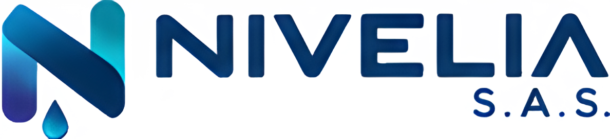
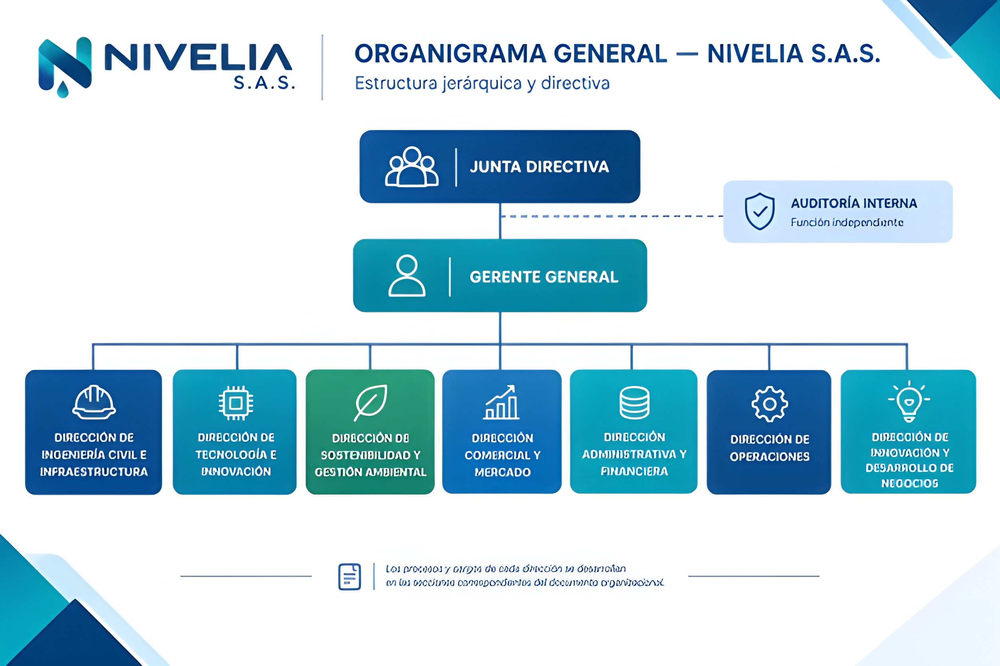

NIVELIA. Cotizar ProyectoConozca la esencia, los valores y las políticas que rigen la operación de NIVELIA S.A.S.
NIVELIA S.A.S. diseña, desarrolla e implementa soluciones de infraestructura urbana inteligente mediante la integración de ingeniería, tecnología, automatización y sostenibilidad, con el propósito de atender necesidades reales de las ciudades, mejorar la seguridad y accesibilidad de las personas y contribuir al desarrollo de entornos urbanos más resilientes, eficientes y sostenibles.
Para el año 2035, NIVELIA S.A.S. será reconocida en Colombia y Latinoamérica como una empresa referente en infraestructura urbana inteligente, destacándose por su innovación tecnológica, excelencia técnica, confiabilidad, sostenibilidad y capacidad para desarrollar soluciones escalables que contribuyan a transformar las ciudades.
Promover nuevas soluciones que respondan a necesidades reales de las ciudades.
Considerar los impactos ambientales, sociales y económicos de las actividades de la organización.
Priorizar la protección de trabajadores, usuarios, clientes y comunidades.
Promover la colaboración entre áreas y disciplinas.
Buscar altos estándares de calidad, desempeño y confiabilidad.
Orientar las soluciones hacia la generación de beneficios para la sociedad.
Consolidar a NIVELIA S.A.S. como una empresa especializada en el desarrollo de soluciones de infraestructura urbana inteligente, mediante la integración de ingeniería, tecnología, innovación y sostenibilidad.
Desarrollar soluciones de infraestructura urbana que respondan a necesidades reales del entorno.
Fortalecer las capacidades de innovación, investigación y desarrollo tecnológico.
Garantizar estándares de calidad, seguridad y confiabilidad en productos y servicios.
Promover prácticas sostenibles y una gestión responsable de los recursos.
Desarrollar relaciones comerciales con entidades públicas y privadas.
Fortalecer la capacidad de expansión de NIVELIA hacia diferentes ciudades y mercados.
Consolidar una estructura organizacional eficiente y orientada a la mejora continua.
NIVELIA S.A.S. adopta una estructura jerárquica con niveles diferenciados de autoridad, coordinación, ejecución y apoyo.
Responsable del gobierno corporativo y del direccionamiento general.
Responsable de dirigir las principales áreas funcionales.
Coordinan procesos y ejecutan actividades profesionales.
Ejecutan actividades técnicas, operativas y de soporte.
Función independiente que reporta a la Junta Directiva para evaluación, control y seguimiento.

📊 Organigrama — Consulte la sección 5.3 del documento NIV-ORG-001Propósito: Dirigir el desarrollo técnico de las soluciones físicas de NIVELIA.
Propósito: Desarrollar y administrar las capacidades tecnológicas y digitales.
Propósito: Garantizar que las actividades incorporen criterios ambientales.
Propósito: Desarrollar mercados, clientes y oportunidades de negocio.
Propósito: Administrar los recursos financieros, administrativos y humanos.
Propósito: Coordinar la ejecución operacional de las soluciones.
Propósito: Identificar oportunidades para crear nuevas soluciones.
Las 10 políticas que orientan la operación y el gobierno de NIVELIA S.A.S.
Objetivo: Establecer principios de integridad, transparencia, responsabilidad y comportamiento ético que orienten la toma de decisiones y las relaciones de NIVELIA S.A.S.
Alcance: Aplica a accionistas, Junta Directiva, directivos, trabajadores, contratistas, proveedores y terceros.
Principios: Integridad; transparencia; responsabilidad; imparcialidad; confidencialidad; legalidad; respeto.
Compromisos: Prevenir conflictos de interés; rechazar prácticas de corrupción; proteger recursos; mantener información veraz; promover decisiones responsables; establecer canales de reporte.
Indicadores: Incidentes éticos; reportes gestionados; hallazgos; porcentaje de personal capacitado.
Objetivo: Garantizar que productos, servicios y procesos cumplan requisitos técnicos, contractuales, funcionales y de calidad establecidos.
Alcance: Todos los procesos y áreas de NIVELIA.
Principios: Calidad; prevención; enfoque al cliente; trazabilidad; mejora continua; cumplimiento.
Compromisos: Controlar procesos; verificar entregables; controlar materiales; gestionar no conformidades; implementar acciones correctivas; evaluar satisfacción.
Indicadores: Entregables aprobados; reprocesos; no conformidades; satisfacción del cliente; cumplimiento de requisitos.
Objetivo: Prevenir accidentes, lesiones, enfermedades laborales y condiciones inseguras asociadas a las actividades de NIVELIA.
Alcance: Todos los trabajadores, contratistas y actividades administrativas, técnicas, operativas, de instalación y mantenimiento.
Compromisos: Identificar peligros; evaluar riesgos; implementar controles; capacitar; usar EPP; reportar incidentes; preparar emergencias.
Indicadores: Accidentes; incidentes; inspecciones; capacitación; acciones correctivas.
Objetivo: Promover la investigación, experimentación y desarrollo de soluciones que fortalezcan la competitividad de NIVELIA.
Alcance: Iniciativas de innovación, desarrollo de productos, prototipos, tecnologías y nuevos modelos de negocio.
Principios: Creatividad; experimentación; viabilidad; colaboración; escalabilidad; protección intelectual.
Compromisos: Evaluar tecnologías; desarrollar prototipos; promover I+D; establecer alianzas; proteger propiedad intelectual; medir resultados.
Indicadores: Iniciativas; prototipos; nuevos productos; tecnologías evaluadas; soluciones escaladas.
Objetivo: Integrar criterios ambientales y de sostenibilidad en las operaciones y soluciones de NIVELIA.
Alcance: Todas las áreas, procesos, instalaciones, operaciones y soluciones de la organización.
Principios: Prevención; eficiencia; responsabilidad ambiental; economía circular; uso racional de recursos.
Compromisos: Prevenir impactos; gestionar residuos; optimizar agua y energía; promover materiales sostenibles; cumplir requisitos ambientales.
Indicadores: Consumo de agua; consumo energético; residuos; aprovechamiento; cumplimiento ambiental.
Objetivo: Proteger información y activos tecnológicos de NIVELIA frente a pérdida, alteración, acceso no autorizado o divulgación indebida.
Alcance: Información física, digital, sistemas, dispositivos, software, diseños y activos tecnológicos.
Principios: Confidencialidad; integridad; disponibilidad; trazabilidad; mínimo privilegio.
Compromisos: Controlar accesos; proteger dispositivos; realizar copias de seguridad; gestionar incidentes; proteger diseños y software.
Indicadores: Incidentes; usuarios capacitados; cumplimiento de controles; vulnerabilidades gestionadas.
Objetivo: Desarrollar una gestión del talento basada en competencias, respeto, igualdad de oportunidades, bienestar y desarrollo profesional.
Alcance: Todos los trabajadores y procesos de gestión humana.
Principios: Igualdad; respeto; mérito; inclusión; confidencialidad; desarrollo.
Compromisos: Selección basada en competencias; igualdad de oportunidades; capacitación; evaluación; bienestar; prevención de discriminación.
Indicadores: Rotación; ausentismo; capacitación; desempeño; cobertura de vacantes.
Objetivo: Identificar, evaluar, tratar y monitorear riesgos que puedan afectar los objetivos empresariales.
Alcance: Todos los procesos y niveles de NIVELIA.
Principios: Prevención; proporcionalidad; trazabilidad; responsabilidad; mejora continua.
Compromisos: Identificar riesgos; evaluar impacto; establecer controles; asignar responsables; monitorear y mejorar.
Indicadores: Riesgos críticos abiertos; acciones vencidas; incidentes; cumplimiento de controles.
Objetivo: Establecer criterios para relaciones profesionales, transparentes y responsables con clientes y partes interesadas.
Alcance: Clientes, usuarios, proveedores, comunidades, aliados, entidades públicas y privadas.
Principios: Transparencia; respeto; oportunidad; confidencialidad; responsabilidad.
Compromisos: Proporcionar información clara; cumplir compromisos; atender solicitudes; gestionar reclamaciones; medir satisfacción.
Indicadores: Satisfacción; tiempo de respuesta; reclamaciones; cumplimiento de compromisos.
Objetivo: Garantizar compras y contratación de proveedores bajo criterios de calidad, costo, capacidad, cumplimiento, seguridad y transparencia.
Alcance: Compras de bienes y servicios, proveedores, contratistas y servicios tercerizados.
Principios: Transparencia; objetividad; calidad; eficiencia; trazabilidad; cumplimiento.
Compromisos: Comparar ofertas; verificar requisitos; evaluar proveedores; realizar seguimiento contractual; gestionar desempeño.